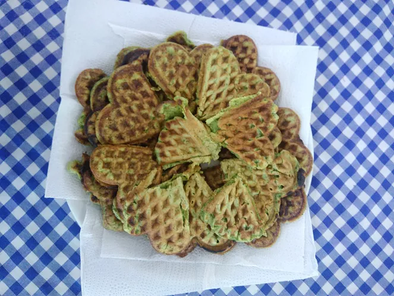

Receitas
Waffles de ora-pro-nóbis

Ingredientes
- 40 folhas de ora-pro-nóbis (PANC - Pereskia aculeata)
- ½ xícara de açúcar
- 3 ovos
- 1 ½ xícara de farinha de trigo
- 200ml de leite de coco
- 3 colheres de sopa de óleo
- 1 colher de sopa de essência de baunilha
- ½ colher de chá de fermento
Modo de preparo
Lave as folhas de ora-pro-nobis.
Junte todos os ingredientes e bata no liquidificador.
Em seguida asse em forma apropriada untada com óleo.